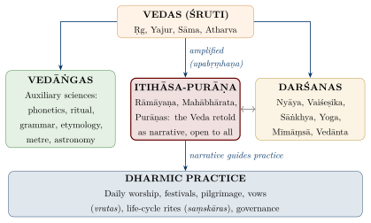
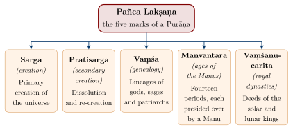
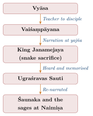

Chapter 1: Introduction — What is Itihāsa?¶
ṛgvedaṃ bhagavo ’dhyemi yajurvedaṃ sāmavedam ātharvaṇaṃ caturtham itihāsapurāṇaṃ pañcamam …
“Sir, I know the Ṛgveda, the Yajurveda, the Sāmaveda, the Ātharvaṇa as the fourth, and Itihāsa-Purāṇa as the fifth …”
— Chāndogya Upaniṣad 7.1.2 (Nārada to Sanatkumāra)
The word itihāsa names a genre of Sanskrit literature that presents itself as an account of what really happened, transmitted by authoritative narrators and directed towards instruction in dharma. The genre does not correspond neatly to the modern discipline of history: it combines genealogy, narrative, didactic discourse and religious teaching, and its claim to truth is a claim made by the tradition rather than one that can be tested by documentary evidence. This volume treats the two great epics — the Rāmāyaṇa and the Mahābhārata — together with the related Purāṇa literature, both as the tradition understands them and as modern textual and historical scholarship has studied them (Brockington 1998; Rocher 1986).
1.1 The Word and Its Claim¶
The word itihāsa is formed from the particles iti (“thus”) and ha (“indeed”) and the verb form āsa (“it was”, from the root as, “to be”): “thus indeed it was.” It already occurs in late Vedic texts, often in the compound itihāsa-purāṇa, as the name of a body of narrative lore recited alongside the Vedas. The lexicon Amarakośa (c. 5th–7th century CE) glosses it briefly as itihāsaḥ purāvṛttam, “itihāsa is an account of past events.”
The gloss expresses the conviction that the events narrated in the epics actually took place, even though they are told in poetry (kāvya) and directed towards instruction in dharma. Modern historians have asked a different question: not whether the events happened, but what kind of historical consciousness the genre expresses. The colonial claim that India “had no history” before the Muslim chroniclers has been rejected. Romila Thapar has argued that early India possessed “embedded” historical traditions — genealogies (vaṃśānucarita), heroic narratives and dynastic lists preserved in the epics and Purāṇas — which later became “externalised” in chronicles, inscriptions and royal biographies, and that later dynasties legitimised their rule by attaching themselves to the Solar and Lunar lineages of these genealogies (Thapar 2013). On this view the epics are evidence for how communities remembered and used their past, and for the periods in which they were composed and transmitted, rather than records that can be read off as political history. Earlier attempts, notably Pargiter’s, to reconstruct a dynastic chronology from the Purāṇic genealogies are now generally regarded as over-confident (Pargiter 1922; Rocher 1986). Table 1.1 sets itihāsa beside the neighbouring categories of narrative.
| Category | Basis as understood in the tradition | Purpose |
|---|---|---|
| Itihāsa | Events held to have occurred (purāvṛtta) | Instruction in dharma through exemplary lives |
| Purāṇa | “Ancient” lore: cosmogony, genealogy, theology, ritual | Comprehensive religious instruction |
| Kāvya | Poetic composition, often on an epic theme | Aesthetic experience (rasa) |
| Kathā / Ākhyāyikā | Prose narrative (invented or based on tradition) | Entertainment and instruction |
| Arthavāda | Explanatory or laudatory passages in the Veda (in Mīmāṃsā usage) | Supporting Vedic injunctions |
1.2 The “Fifth Veda” and the Authority of Itihāsa¶
The tradition gives the itihāsa-purāṇa literature the title of Pañcama Veda, the “fifth Veda,” as in the epigraph above, and the Mahābhārata states its relation to the Veda in a frequently quoted line:
Mahābhārata 1.1.204 (Critical Edition)
itihāsapurāṇābhyāṃ vedaṃ samupabṛṃhayet
Translation:
“One should amplify (upabṛṃh-) the Veda by means of Itihāsa and Purāṇa.”
On this view what the Vedas state in compressed form, the epics and Purāṇas unfold through narrative, dialogue and exemplary lives. The claim had a social side. Vedic learning was restricted to the initiated men of the three dvija (“twice-born”) varṇas; the epics and Purāṇas were recited to everyone. The Bhāgavata Purāṇa (1.4.25) explains that Vyāsa composed the Bhārata out of compassion because “the triple Veda is not within the hearing of women, Śūdras and degenerate members of the twice-born classes.” The epics thus became the main vehicle of religious education for the majority of the population — but within a framework that took the hierarchy of varṇa and gender for granted, as the same verse shows. Table 1.2 gives examples of the kinds of knowledge the epics carried.
| Domain | Epic Source | Specific Teaching |
|---|---|---|
| Governance | Mahābhārata, Śānti Parva | Rājadharma: duties of kings, taxation, justice |
| Medicine | Rāmāyaṇa, Yuddha Kāṇḍa | Suṣeṇa’s treatment of the wounded; Hanumān’s mountain of herbs |
| Military science | Mahābhārata, Bhīṣma and Droṇa Parvas | Battle arrays (vyūha), weapons, codes of combat |
| Geography | Rāmāyaṇa, Kiṣkindhā Kāṇḍa | Sugrīva’s description of the four quarters of the earth |
| Law | Mahābhārata, Śānti Parva | Āpaddharma: conduct in times of emergency |
| Philosophy | Bhagavad Gītā; Mokṣadharma | Sāṅkhya, Yoga, Vedānta and the theory of action (karman) |
In the formal classification of learning the epics held a more modest place. A verse of the Viṣṇu Purāṇa lists the fourteen branches of knowledge (caturdaśa vidyās):
Viṣṇu Purāṇa 3.6.27
aṅgāni vedāś catvāro mīmāṃsā nyāyavistaraḥ
purāṇaṃ dharmaśāstraṃ ca vidyā hy etāś caturdaśa
Translation:
“The (six) auxiliaries, the four Vedas, Mīmāṃsā, the extensive Nyāya, Purāṇa and Dharmaśāstra — these are the fourteen branches of knowledge.”
Here itihāsa is not listed separately but is subsumed under purāṇa. In the classification of authoritative texts, too, the epics and Purāṇas are smṛti (“remembered” tradition) rather than śruti (the Veda, held to be revealed). The Mīmāṃsā school, which developed the most explicit theory of textual authority, held that smṛti is authoritative because it is presumed to rest on Vedic texts, perhaps now lost, and that where it contradicts an extant Vedic text it is to be disregarded (Mīmāṃsāsūtra 1.3.1–3 with Śabara’s commentary); narrative passages within the Veda itself were classed as arthavāda, authoritative only in so far as they support an injunction. In practice the epics — especially the Bhagavad Gītā — came to rival the Veda in religious influence, and the Vedāntic schools counted the Gītā among their three foundational texts (prasthānatraya). Figure 1.1 shows the mediating role that the tradition assigns to itihāsa-purāṇa.

1.3 Itihāsa and Purāṇa Distinguished¶
Although itihāsa and purāṇa are often named together, the tradition distinguishes them (Table 1.3).
| Criterion | Itihāsa | Purāṇa |
|---|---|---|
| Meaning | “Thus it was” — historical narrative | “Ancient” — ancient lore |
| Number | Two: Rāmāyaṇa and Mahābhārata | Eighteen Mahāpurāṇas + Upapurāṇas |
| Central Focus | Life of a single hero or royal lineage | Cosmology, genealogy, Dharma teachings |
| Narrative Style | One main story, framed and interrupted by many embedded episodes | Encyclopaedic, dialogical, nested narratives |
| Defining Feature | Purāvṛtta (ancient happening) | Pañca Lakṣaṇa (five characteristics) |
| Authorship (traditional) | Vālmīki (Rāmāyaṇa), Vyāsa (Mahābhārata) | Attributed to Vyāsa |
1.3.1 The Pañca Lakṣaṇa of Purāṇas¶
A verse found in several Purāṇas defines the genre by five characteristics (pañca lakṣaṇa):
Kūrma Purāṇa 1.1.12; the verse recurs in several other Purāṇas
sargaś ca pratisargaś ca vaṃśo manvantarāṇi ca
vaṃśānucaritaṃ caiva purāṇaṃ pañcalakṣaṇam
Translation:
“Creation, secondary creation, genealogy (of gods and sages), the Manvantara periods, and the deeds of the royal lineages — (this is) a Purāṇa, possessing five characteristics.”
As Rocher and others have pointed out, the extant Purāṇas fit this definition poorly: some of the five topics occupy only a small part of most Purāṇas, while much of their bulk is devoted to ritual, pilgrimage, sectarian theology and dharma (Rocher 1986). The Bhāgavata Purāṇa (12.7) gives an expanded list of ten characteristics. Figure 1.2 sets out the classical five.

1.4 Scale and Literary Form¶
Tradition assigns the Rāmāyaṇa 24,000 ślokas in seven kāṇḍas, and the Mahābhārata 100,000 ślokas (it calls itself the śatasāhasrī saṃhitā) in eighteen parvans. The critical editions are shorter: the Poona Critical Edition of the Mahābhārata contains roughly 75,000 verses, and the Baroda Critical Edition of the Rāmāyaṇa is likewise appreciably shorter than the vulgate. A śloka is a couplet of two sixteen-syllable lines, each roughly comparable in length to a Greek hexameter; counted in this way, the critical text of the Mahābhārata is about five times the combined length of the Iliad and Odyssey (c. 28,000 lines), and the vulgate’s traditional 100,000 ślokas would be about seven times. The Purāṇic tradition assigns the eighteen Mahāpurāṇas a total of 400,000 ślokas (Bhāgavata Purāṇa 12.13); actual printed texts vary considerably (Table 1.4).
| Text | Traditional count of ślokas | Divisions |
|---|---|---|
| Rāmāyaṇa | 24,000 | 7 Kāṇḍas |
| Mahābhārata | 100,000 (CE c. 75,000) | 18 Parvas, 100 Upaparvans |
| Harivaṃśa (appendix) | 12,000 (CE c. 6,000) | 2–3 Parvas |
| Bhagavad Gītā | 700 | 18 Adhyāyas |
| 18 Mahāpurāṇas | 400,000 (traditional total) | Varying |
The forms through which this mass of material is organised recur throughout the volume. The frame narrative sets stories within stories: in the Mahābhārata the bard Ugraśravas Sauti recites to Śaunaka and the sages of the Naimiṣa forest the epic he heard Vaiśaṃpāyana recite to King Janamejaya, the great-grandson of its heroes (Section 4.18). Teaching is given in dialogue (saṃvāda) — Kṛṣṇa and Arjuna, Bhīṣma and Yudhiṣṭhira, Vidura and Dhṛtarāṣṭra. Self-contained embedded stories (upākhyāna) such as Nala, Sāvitrī and the Rāmopākhyāna comment on the main story. Genealogical lists, set descriptions (varṇana) of seasons, cities and battles, and extended philosophical discourse complete the repertoire. Because the corpus gathers law, statecraft, cosmology, philosophy, geography and the arts as well as narrative, the tradition has treated it as a knowledge system in its own right; Rocher’s survey shows, however, that much Purāṇic and māhātmya material is ritual, sectarian or local in purpose, so that any single unifying aim is better described as the tradition’s ideal than as a description of the texts.
1.4.1 Dharma as the Tradition’s Axis¶
For the tradition, the unifying principle of the corpus is dharma: on this reading every narrative, discourse and genealogy serves to show the nature, practice and fruits of dharma and the consequences of adharma. One of the closing verses of the Mahābhārata, put in Vyāsa’s mouth, voices the tradition’s complaint that this teaching goes unheeded:
Mahābhārata, Svargārohaṇa Parva 18.5.49 (Critical Edition)
Sanskrit:
ūrdhvabāhur viraumy eṣa na ca kaścic chṛṇoti me
dharmād arthaś ca kāmaś ca sa kimarthaṃ na sevyate
Translation:
“With upraised arms I cry out, but none heeds my call: from Dharma flow Artha (prosperity) and Kāma (fulfilment); why then is Dharma not pursued?”
1.5 Dating: Two Chronologies¶
The chronology of the itihāsa-purāṇa texts must be approached on two levels. The tradition places the events of the Rāmāyaṇa in the Tretā Yuga and the Bhārata war at the junction of the Dvāpara and Kali Yugas; the Kali Yuga is conventionally reckoned from 3102 BCE, an epoch used by Āryabhaṭa (499 CE), and the Aihole inscription of Pulakeśin II (634 CE) dates itself 3,735 years after the Bhārata war. Modern scholarship, working from language, metre, internal cross-references, the material culture the texts describe and their relation to datable literature, dates the composition of the texts as we have them much later, and treats each as the product of centuries of growth. Table 1.5 sets out both views; academic ranges are given first throughout this volume. Attempts to confirm the traditional dates by archaeology or by the planetary positions mentioned in the epics are examined in Section 12.11.
| Text | Academic dating of composition | Traditional dating |
|---|---|---|
| Vālmīki Rāmāyaṇa | Core (Books 2–6) c. 5th–3rd century BCE; Books 1 and 7 added later; substantially complete by c. 2nd–3rd century CE (Brockington). Goldman places the earliest stratum somewhat earlier, c. 750–500 BCE. | Composed by Vālmīki, a contemporary of Rāma, in the Tretā Yuga |
| Mahābhārata | Composite text growing c. 400 BCE–400 CE (Brockington); Hiltebeitel argues for a written composition between the mid-2nd century BCE and the turn of the era | Composed by Vyāsa, a participant in the events, at the end of the Dvāpara Yuga (war conventionally c. 3102 BCE) |
| Bhagavad Gītā | Usually c. 2nd century BCE–1st century CE; estimates range from the 5th century BCE, and some scholars see layers | Spoken by Kṛṣṇa on the battlefield of Kurukṣetra |
| Harivaṃśa | c. 1st–3rd century CE | Appendix (khila) by Vyāsa |
| Mahāpurāṇas | Earliest layers of the oldest Purāṇas c. 3rd–5th century CE (Hazra); Bhāgavata c. 9th–10th century CE in most current estimates; all were revised and expanded until the early modern period (Rocher) | Composed by Vyāsa at the beginning of the Kali Yuga |
Within the tradition the ṛṣis are regarded as seers (draṣṭā) of truths that are sanātana (eternal), so the date of a text’s composition is not thought to determine the validity of its teaching. The academic dates concern the texts as literary artefacts; they neither confirm nor refute the religious claims made for them (Hazra 1940; Rocher 1986; Brockington 1998; Hiltebeitel 2001).
1.6 Transmission and Recitation¶
The Mahābhārata describes its own transmission as a chain of narrators: Vyāsa taught the epic to his five disciples, among them Vaiśaṃpāyana; Vaiśaṃpāyana narrated it to King Janamejaya during the snake sacrifice (sarpasattra); and Ugraśravas Sauti, who heard it there, re-narrated it to the sages assembled under Śaunaka in the Naimiṣa forest (Figure 1.3). This layered frame is a literary device, but it also mirrors the real social setting of epic recitation: the sūtas (bards attached to royal courts) and, later, brahmin reciters (paurāṇikas, kathāvācakas) who performed the epics, often at rituals and festivals. The connection of the frame with Janamejaya’s sacrifice has been analysed as a deliberate ritual structure (Minkowski 1989).

The epic and Purāṇic corpus was preserved by a combination of oral performance and manuscript copying. Unlike the Vedas, which were preserved word for word through techniques such as the jaṭā and ghana recitations, the epics were transmitted through a more flexible tradition of narrative recitation that allowed both the preservation of core content and adaptation to local audiences. The result, visible in the manuscripts, is a large number of regional versions and recensions — the reason critical editions were needed (Sections 2.3 and 4.8). The best-known story of the writing of the Mahābhārata, in which Gaṇeśa serves as Vyāsa’s scribe, is absent from most manuscripts and from the Critical Edition (Section 4.1).
Recitation was also a religious act. The Taittirīya Upaniṣad (1.11.1) instructs the departing student, svādhyāyān mā pramadaḥ, “Do not neglect your recitation”; in the tradition, hearing and reciting the epics and Purāṇas came to be regarded as a form of this svādhyāya, promising merit (puṇya) to reciter and listener alike, and the phalaśruti passages at the end of the epics and of individual Purāṇas spell out the rewards. Table 1.6 lists the main forms that this engagement has taken; four of them are studied in Section 12.5.
| Form | Sanskrit Term | Description |
|---|---|---|
| Complete recitation | Pārāyaṇa | Full text recited over 7–30 days; considered a sacred act |
| Scholarly discourse | Pravācana | A learned speaker expounds episodes with commentary |
| Dramatic performance | Nāṭya / Līlā | Rāmlīlā, Kṛṣṇa Līlā, Yakṣagāna |
| Devotional singing | Bhajana / Kīrtana | Epic episodes rendered in song |
| Temple sculpture | Śilpa / Mūrti | Narrative panels on temple walls |
| Manuscript painting | Citra / Paṭa | Illustrated manuscripts (Mughal, Rajput, Pahari, Odia and other schools) |
| Shadow puppetry | Chāyā Nāṭaka | Tolu Bommalata (Andhra), Tolpāvakkūttu (Kerala), Togalu Gombeyata (Karnataka) |
1.7 Commentators and Levels of Meaning¶
The interpretation of the epics and Purāṇas has been shaped by a commentarial tradition that is, for the most part, medieval and early modern. The Bhagavad Gītā attracted the largest number of commentaries, from Śaṅkara’s (c. 8th century), the earliest to survive, through Rāmānuja and Madhva to Madhusūdana Sarasvatī (Table 6.3); the Bhāgavata Purāṇa was expounded by Śrīdhara Svāmin and by the theologians of the Kṛṣṇa schools (Table 7.5); and the Rāmāyaṇa found its principal commentators in the south from the sixteenth century, above all the Śrīvaiṣṇava Govindarāja (Section 2.10). The whole Mahābhārata had fewer interpreters. Madhva’s Mahābhāratatātparyanirṇaya is a verse digest reading the whole epic theologically, and the only complete commentary in common use is the Bhāratabhāvadīpa (“Lamp on the Meaning of the Bhārata”) of Nīlakaṇṭha Caturdhara, a Mahārāṣṭrian scholar working in Benares in the late seventeenth century. Nīlakaṇṭha collated many manuscripts to establish his text, which became the basis of the widely printed “vulgate” (the northern recension as he constituted it); he often offers alternative explanations of disputed passages, and his Advaitic reading of the epic remains the main traditional point of reference.
Traditional readers have long recognised that an epic narrative can be read on more than one level at once: as an account of events, as moral instruction, as philosophical allegory and as the play (līlā) of God. The Mahābhārata itself remarks that some learned brahmins begin the Bhārata with Manu, others with Āstīka and others with Uparicara (1.1.50 in the Critical Edition), and Madhva is commonly understood to have taken this as a hint that the epic carries historical, moral and spiritual senses simultaneously, while insisting that the historical sense is not cancelled by the others. Later devotional readers, especially in the Rāma and Kṛṣṇa traditions, read the narratives above all as divine līlā. A modern version of the same idea is V. S. Sukthankar’s: in lectures given shortly before his death, the editor of the Critical Edition read the epic on a mundane, an ethical and a metaphysical plane at once (Sukthankar 1957).
Classical critics were equally aware that the epics are literature. The ninth-century theorist Ānandavardhana, in the fourth chapter of his Dhvanyāloka, treats the Mahābhārata as at once a śāstra (a teaching) and a kāvya (a poem), whose dominant sentiment is the tranquillity (śānta rasa) born of disillusion with worldly ends, shown in the ruin of the Yādavas and the Pāṇḍavas’ bleak victory; and he regards the Rāmāyaṇa as founded on pathos (karuṇa), the grief of separation that begins with the poem’s own origin story (Section 2.1). These two judgements have shaped the reading of both epics ever since, and later chapters refer back to them here.
1.8 The Epics in Comparative Perspective¶
Comparison with other epic traditions brings out both the distinctive features of the Sanskrit epics and how much they share with heroic poetry elsewhere — bardic origins, formulaic diction, heroic codes and a long period of oral and written growth (Smith 1977; Brockington 1998). Table 1.7 sets them beside the Homeric poems and the Epic of Gilgamesh. A different kind of comparison asks whether the Mahābhārata preserves, in transposed form, myths that the Indo-European peoples inherited in common; that question is taken up in Section 4.4.
| Feature | Sanskrit epics | Homeric epics | Epic of Gilgamesh |
|---|---|---|---|
| Length | c. 75,000 ślokas (CE MBh; 100,000 trad.) and 24,000 (Rām., trad.) | c. 28,000 lines | c. 3,000 lines (Standard Babylonian version) |
| Central ethical frame | Dharma, often contested within the text | Honour (timē) and glory (kleos) | Mortality and the limits of kingship |
| Didactic content | Extensive (Gītā, Śānti and Anuśāsana Parvas) | Limited | Limited |
| Later life | Continuously recited, retold, performed and worshipped | Central to classical education and literature | Lost; recovered through archaeology in the 19th century |
Three features stand out. The Sanskrit epics have been recited, performed and retold without a break for some two millennia, and remain central to religious life. They carry extended teaching on dharma, statecraft, philosophy and devotion inside the narrative. And they exist in many versions, for every region and community produced its own, including Jain, Buddhist, folk and oppositional retellings (Sections 2.8 and 4.10).
1.9 Approach and Scope of This Volume¶
This volume keeps two perspectives in view. It presents the texts as the tradition has understood them, respecting their status as sacred literature for many readers, and it reports the findings of modern textual criticism, comparative study and archaeology where they bear on the texts. It sets the major interpretive traditions — Advaita, Viśiṣṭādvaita, Dvaita, devotional, Jain, Buddhist and regional — beside modern critical readings, including feminist and Dalit critiques, without making any one of them the measure of the others; where a heading or a judgement belongs to the tradition rather than to the author, it says so. Key ślokas are given in transliteration with translation, only where their wording and reference could be checked. The sociologist Maurice Halbwachs’s idea of “collective memory” — the shared stock of narratives that gives a group its identity — offers a useful modern analogy to the Indian idea of smṛti, “that which is remembered,” and helps to explain why the epics are not only studied but recited, performed, celebrated and contested.
The volume has twelve chapters. After this introduction, Chapters 2 and 3 treat Vālmīki’s Rāmāyaṇa, first as a whole — its structure, recensions, versions and reception — and then book by book; the contested episodes of Vālin, Sītā’s ordeal and Śambūka are discussed in full in Chapter 3. Chapters 4 and 5 do the same for the Mahābhārata: Chapter 4 covers its growth, the Critical Edition and its critics, the Indo-European comparative reading and the Harivaṃśa’s life of Kṛṣṇa, and Chapter 5 surveys the eighteen books. Chapter 6 is devoted to the Bhagavad Gītā, Chapter 7 to the eighteen Mahāpurāṇas with a fuller study of the Bhāgavata, and Chapter 8 to the Upapurāṇas, the māhātmyas of sacred places and the Tamil talapurāṇams. Three thematic chapters follow: Chapter 9 on the hard cases and the limits of epic dharma, Chapter 10 on the women of the epics, and Chapter 11 on the philosophy of the Mokṣadharma and the Nārāyaṇīya. The last chapter, Chapter 12, follows the epics’ afterlife: regional retellings, the Persian translations of the Mughal court and the Sikh Dasam Granth, Southeast Asia, sculpture, dance and ritual theatre, film and festival, and the modern debate over archaeology, astronomy and the historicity of the epics.